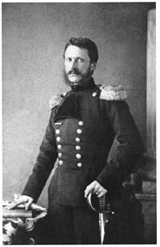
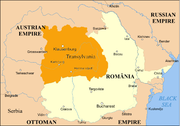

Alexandu Ioan Cuza
Alexandru Ioan Cuza (sau Alexandru Ioan I; nascut la 20 martie 1820, Barlad, Moldova, astazi in Romania si decedat la 15 mai 1873, Heidelberg, Germania) a fost primul domnitor al Principatelor Unite si al statului national Romania. A participat activ la miscarea revolutionara de la 1848 din Moldova si la lupta pentru unirea Principatelor. La 5 ianuarie 1859, Cuza a fost ales domn al Moldovei, iar la 24 ianuarie 1859 și al Tarii Romanesti, infaptuindu-se astfel unirea celor doua tari romane. Devenit domnitor, Cuza a dus o sustinuta activitate politica si diplomatica pentru recunoasterea unirii Moldovei si Tarii Romanesti de catre Puterea suzerana si Puterile Garante si apoi pentru desavarsirea unirii Principatelor Romane pe calea infaptuirii unitatii constitutionale si administrative, care s-a realizat in ianuarie 1862, cand Moldova si Tara Romaneasca au format un stat unitar, adoptand oficial, in 1862, numele de Romania si formand statul roman modern, cu capitala la Bucuresti, cu o singura adunare si un singur guvern.
Cuza a fost obligat sa abdice in anul 1866 de catre o larga coalitie a partidelor vremii, denumita si Monstruoasa Coalitie, din cauza orientarilor politice diferite ale membrilor sai, care au reactionat astfel fata de manifestarile autoritare ale domnitorului.
Unirea
Unirea Principatelor Romane a avut loc la jumatatea secolului al XIX-lea si reprezinta unificarea vechilor state Moldova si Tara Romaneasca.
Unirea este strans legata de personalitatea lui Alexandru Ioan Cuza si de alegerea sa ca domnitor al ambelor principate la 5 ianuarie 1859 in Moldova si la 24 ianuarie 1859 in Tara Romaneasca. Totusi, unirea a fost un proces complex, bazat pe puternica apropiere culturala si economica intre cele doua tari. Procesul a inceput in 1848, odata cu realizarea uniunii vamale intre Moldova si Tara Romaneasca, in timpul domniilor lui Mihail Sturdza, respectiv Gheorghe Bibescu.
Deznodamantul razboiului Crimeii a dus la un context european favorabil realizarii unirii. Votul popular favorabil unirii in ambele tari, rezultat in urma unor adunari ad-hoc in 1857 a dus la Conventia de la Paris din 1858, o intelegere intre Marile Puteri prin care se accepta o uniune mai mult formala intre cele doua tari, cu guverne diferite si cu unele institutii comune. La inceputul anului urmator, liderul unionist moldovean Alexandru Ioan Cuza a fost ales ca domnitor al Moldovei si Tarii Romanesti, aducandu-le intr-o uniune personala. In 1862, cu ajutorul unionistilor din cele doua tari, Cuza a unificat Parlamentul si Guvernul, realizand unirea politica.
Dupa inlaturarea sa de la putere in 1866, unirea a fost consolidata prin aducerea pe tron a principelui Carol de Hohenzollern-Sigmaringen, iar constitutia adoptata in acel an a denumit noul stat Romania.
